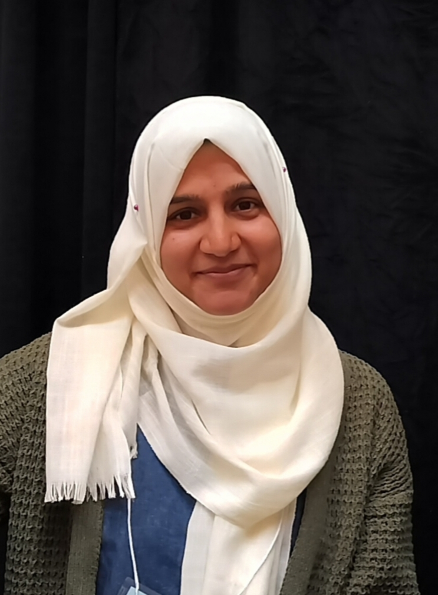

Shumaila Ambreen
I am currently pursuing a Ph.D. in Mathematics at Kansas State University under the supervision of
Dr. Dinh-Liem Nguyen.
Prior to this, I completed my M.Phil. in Mathematics from Quaid-i-Azam University, Islamabad, Pakistan.
My research interests lie in inverse problems and elastic wave propagation, with a particular focus on developing
efficient computational methods for wave-based imaging. Beyond research, I am passionate about teaching and enjoy
helping students build a strong foundation in mathematics.

Research
My research is centered on inverse elastic scattering problems for penetrable periodic gratings. In particular, I investigate direct sampling methods for accurately reconstructing unknown periodic scatterers using measured elastic wave data.
Publications
- S. Ambreen and Asif Ali. “A Study of Multiplicatively Conjugate Loops and Wielandt Subloops.” Quasigroups and Related Systems, 22 (2014).
Talks and conferences
-
15th Ohio River Analysis Meeting
University of Kentucky , Spring 2026. -
SIAM Central States Section Meeting
University of Arkansas, Fall 2025.
Teaching
- Calculus II
- Mathematical Modelling Seminar
- Calculus III
- Elementary Differential Equations
- Traditional Algebra
Academic service
- Graduate Student Host, Prospective Student Visit Weekend
- President, Association for Women in Mathematics
- Sonia Kovalevsky Day Organizer (Middle School Outreach)
- Graduate Program Information Session Volunteer